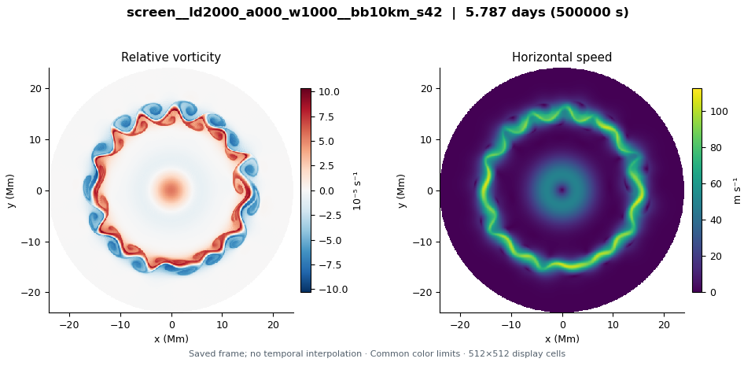
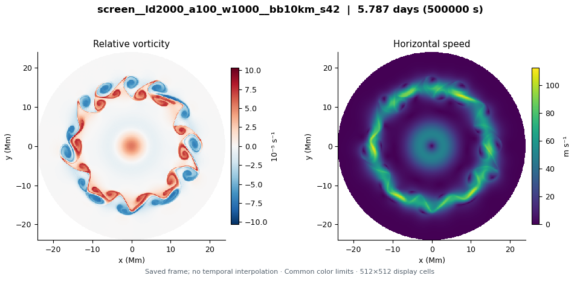
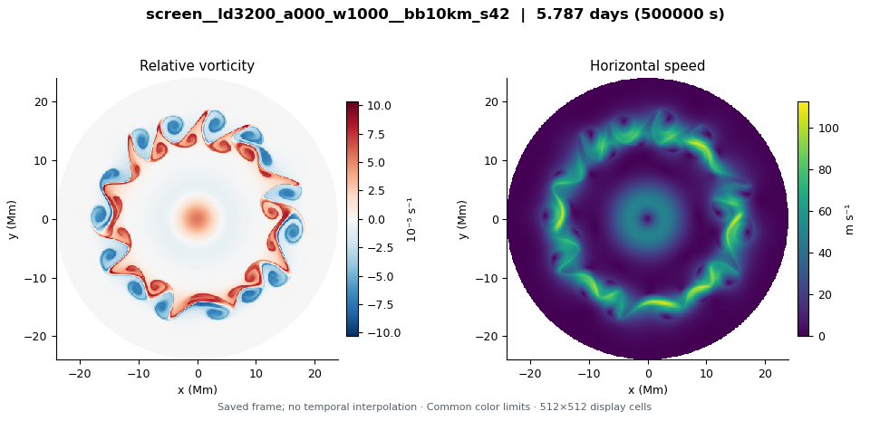
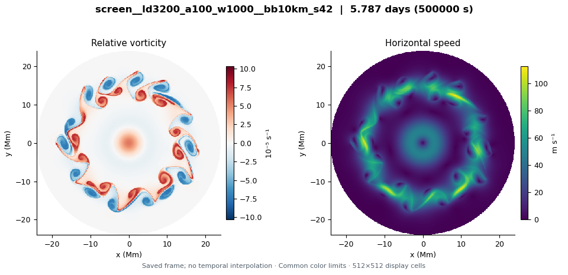
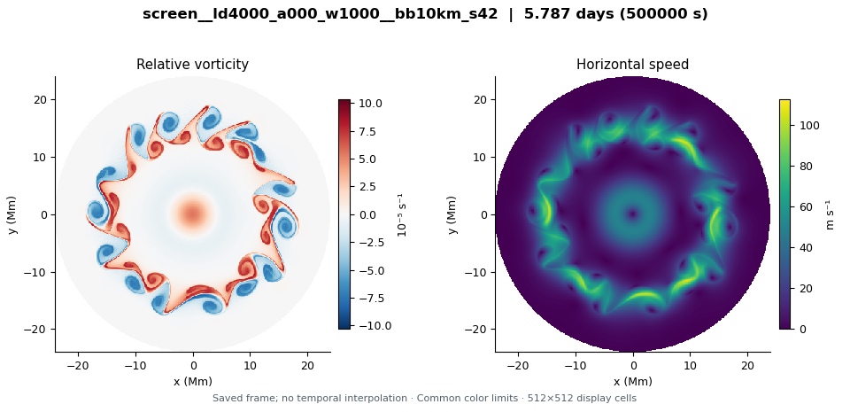
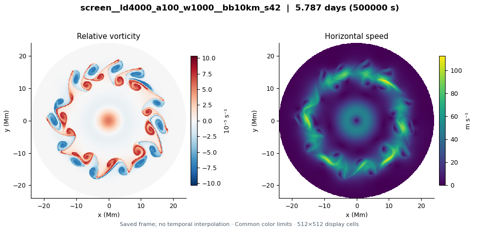

screen__ld2000_a000_w1000__bb10km_s42
LD 2 Mm · Whole upper base × 0 (jet + cyclone) · 5.787 model days
Explore this run →Nine 1024² runs compare deformation radii of 2,000, 3,200 and 4,000 km with prescribed lower flows equal to 0, 50 or 100% of the upper circular jet and central cyclone. The same broadband upper-layer disturbance (modes 1–32, seed 42) evolves for 500,000 seconds in every case; convection is off. Matching applies to the circular base, not its disturbance. The unmatched 2,000-km case has an initial thickness-anomaly bound of about 0.315, requiring caution about the QG approximation. Completion does not establish a stable hexagon, convergence or agreement with observed drift.
These are exploratory simulations, not established Saturn hexagons. Read the initial condition and configuration differences before comparing runs.

LD 2 Mm · Whole upper base × 0 (jet + cyclone) · 5.787 model days
Explore this run →LD 2 Mm · Whole upper base × 0.5 (jet + cyclone) · 5.787 model days
Explore this run →
LD 2 Mm · Whole upper base × 1 (jet + cyclone) · 5.787 model days
Explore this run →
LD 3.2 Mm · Whole upper base × 0 (jet + cyclone) · 5.787 model days
Explore this run →LD 3.2 Mm · Whole upper base × 0.5 (jet + cyclone) · 5.787 model days
Explore this run →
LD 3.2 Mm · Whole upper base × 1 (jet + cyclone) · 5.787 model days
Explore this run →
LD 4 Mm · Whole upper base × 0 (jet + cyclone) · 5.787 model days
Explore this run →LD 4 Mm · Whole upper base × 0.5 (jet + cyclone) · 5.787 model days
Explore this run →
LD 4 Mm · Whole upper base × 1 (jet + cyclone) · 5.787 model days
Explore this run →